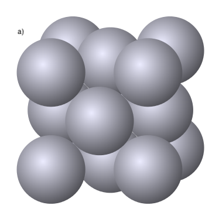
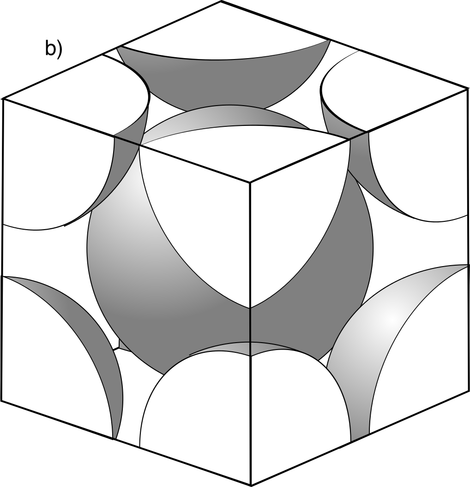
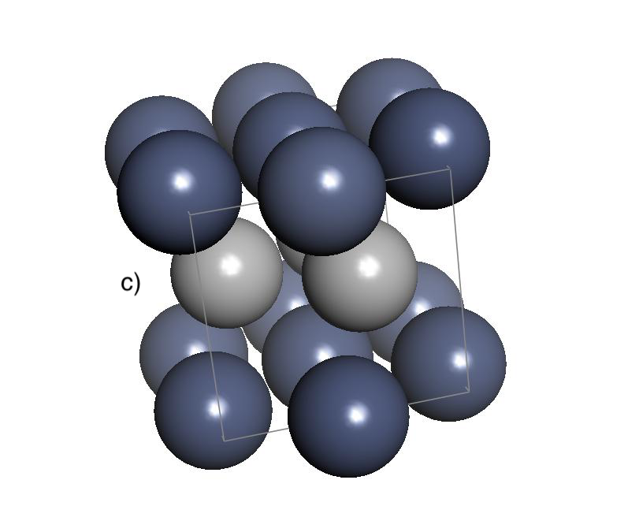
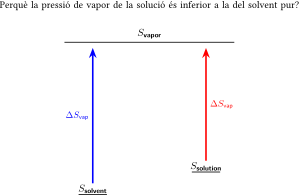

Capítol 4 Enllaç Químic i Forces Intermoleculars
(darrera actualització: 9 d’abril de 2026)
Índex
4.1 Introducció
Sovint, les observacions macroscòpiques fetes amb els sentits estan arrelades en els tipus i les intensitats de les atraccions/repulsions entre espècies químiques a escala molecular. Per exemple, els teus ulls et diuen que encerar un cotxe fa que l’aigua formi grans gotes anomenades perles, però com ho fa, i com protegeix la cera el cos del cotxe de l’oxidació? Per què els sabons fan escuma i per què hi ha sabons i detergents especialitzats per a l’automòbil? Per què hi ha diferents ”pesos”per a l’oli de motor i per què el teu cotxe necessita un en particular? Totes aquestes preguntes estan relacionades amb les forces que es desenvolupen entre molècules en vapors, líquids i superfícies sòlides, a diferència de les interaccions d’enllaç, que ocorren dins d’una molècula[1]:
-
• Per a un àtom individual i per a les reaccions químiques, les forces d’enllaç dins de les molècules són importants. És l’energia emmagatzemada en els enllaços químics la que fa que els hidrocarburs com l’octà siguin excel.lents combustibles per al motor.
-
• Per entendre grans col.leccions de molècules que podem veure, agafar i tocar, les forces intermoleculars esdevenen més importants. Per exemple, les forces intermoleculars molt fortes entre les molècules d’H2O en l’aigua són la raó darrere del punt d’ebullició anòmalament alt d’aquesta petita molècula. Aquestes forces són més febles que els enllaços covalents o iònics, però són essencials per entendre la conducta de les substàncies en estat líquid i sòlid.
4.2 L’enllaç químic
Què entenem per molècula? Què és un enllaç? De quins tipus n’existeixen?
4.2.1 Tipus d’enllaços
És útil usar uns models conceptuals que expliquin l’estructura molecular. Són models extrems que no sempre es segueixen de manera exacta per les substàncies químiques. Sovint tenim barreges d’aquests models en un sistema real, però serveixen per conceptualitzar la manera en què la matèria s’organitza a nivell molecular i atòmic.
Els enllaços químics són les forces que mantenen els àtoms units en una molècula. Hi ha tres tipus d’enllaços químics: enllaços covalents, enllaços iònics i enllaços metàl.lics. La taula 4.1 mostra les característiques de cada tipus d’enllaç.

La majoria dels enllaços químics tenen propietats intermèdies entre el covalent i l’iònic però estan força aprop d’algun dels dos models.
4.2.2 Enllaç covalent
Els enllaços covalents es formen quan dos àtoms comparteixen electrons. Aquest tipus d’enllaç és molt comú en molècules orgàniques i inorgàniques. Els enllaços covalents poden ser simples, dobles o triples, depenent del nombre d’electrons compartits. Els enllaços covalents poden ser polars o no polars. En un enllaç covalent polar, els electrons es comparteixen de manera desigual entre els àtoms. Això es deu a la diferència d’electronegativitat entre els àtoms. En un enllaç covalent no polar, els electrons es comparteixen de manera igual entre els àtoms. Els enllaços covalents no polars són més forts que els enllaços covalents polars. Els enllaços covalents polars són més forts que els enllaços iònics. Els enllaços covalents són els més forts dels tres tipus d’enllaços químics.
Els enllaços vibren constantment per la no nul.la de les molècules. No obstant això, podem mesurar distàncies d’enllaç promig que es pot mesurar a partir d’estudis de raigs X o l’espectroscopia molecular (Taula 4.2).
| Enllaç | BD / Å | Enllaç | BD / Å |
| 1.42 | 0.92 | ||
 |
1.99 | 1.27 | |
| 2.28 |  |
1.41 | |
| 2.67 | 1.61 | ||
| 1.63 |  |
0.74 | |
| 2.14 | 1.094 | ||
| 1.76 |  |
1.207 | |
| 2.32 |  |
1.151 | |
| 1.128 |
Els valors de la taula són molt constants a totes les molècules que contenen aquests enllaços, fins i tot més que no pas el que succeix amb les energies d’enllaç promig de les Taules ?? i ??. Quan això no es compleix és perquè hi ha enllaços diferents (dobles, triples...). Per exemple, entre l’età (), l’etilè () i l’acetilè () les energies d’enllaç entre els àtoms de C varien de 83 a 146 i 200 kcal mol, i les distàncies de 1.54 a 1.34 i 1.20, respectivament.
També es dóna constància en les geometries de les molècules, com s’aprecia a la Figura 4.1.
4.2.3 Enllaç iònic
Els enllaços iònics es formen quan un àtom cedeix electrons a un altre àtom. Aquest tipus d’enllaç és comú en compostos iònics com el clorur de sodi (NaCl). En un enllaç iònic, un àtom es converteix en un ió positiu (catió) i l’altre àtom es converteix en un ió negatiu (anió).
Formulació de Lewis d’un enllaç iònic
En termes de Lewis, la formació d’un enllaç iònic sorgeix de la transferència d’electrons d’un àtom a un altre. Quan es produeix aquesta transferència, tots els electrons de valència de l’element més electropositiu (d’un dels tres primers grups de l’esquerra de la taula periòdica) són eliminats per exposar el nucli de l’àtom. Els electrons alliberats són acceptats als orbitals buits de la capa de valència de l’àtom més electronegatiu (normalment dels grups immediatament a l’esquerra dels gasos nobles), omplint així la capa de valència (Figura 4.2).
Així, la formació del compost iònic clorur de sodi es pot representar pel següent procés:
La formació de l’òxid d’alumini (alúmina) implica seleccionar prou àtoms d’alumini i oxigen per assegurar que tots els electrons alliberats pels àtoms d’alumini (tres de cadascun) siguin acomodats pels àtoms d’oxigen (cadascun dels quals pot acceptar dos electrons):
El nombre d’àtoms requerits per equilibrar els electrons donats i acceptats s’indica en la fórmula química per a l’òxid d’alumini.
L’Energia en la Formació d’Enllaços Iònics
El fet que la transferència d’electrons representada en aquests diagrames condueixi a una disminució de l’energia es pot verificar avaluant les energies associades al procés. L’energia total de formació d’un ió i un ió és la suma de tres termes[3]:
-
1. L’energia d’ionització necessària per ionitzar un àtom de sodi.
-
2. L’energia alliberada quan un electró del sodi s’adhereix a un àtom de clor.
-
3. L’energia d’interacció entre el catió i l’anió, anomenada energia de xarxa.
Aquesta última contribució és fonamental, ja que compensa el cost energètic de la ionització del sodi i l’atracció entre les càrregues oposades fa que l’espècie final sigui més estable que els àtoms neutres.
Tot i que, com veurem més endavant, l’estructura electrònica d’un àtom és complexa, podem pensar que des de la distància la distribució dels electrons segueix una forma propera a esfèrica. Per tant, i seguint la llei de Coulomb, aquestes esferes es comporten com si la seva càrrega estigués concentrada al seu centre, de manera que podem considerar els ions com a càrregues puntuals.
En el cas del clorur de sodi ( ), l’espectroscopia de raigs X mostra que l’estructura del compost és regular amb esferes que contenen 10 i 18 e cadascuna, corresponents als ions i , respectivament. Això demostra que els ions existeixen i que, per tant, les forces que uneixen aquests ions han de ser, per força, elèctriques.
), l’espectroscopia de raigs X mostra que l’estructura del compost és regular amb esferes que contenen 10 i 18 e cadascuna, corresponents als ions i , respectivament. Això demostra que els ions existeixen i que, per tant, les forces que uneixen aquests ions han de ser, per força, elèctriques.
L’anàlisi de la formació d’un compost iònic a partir dels seus elements es tracta comunament en termes d’un cicle de Born-Haber, que desglossa el procés en una sèrie de passos amb energia coneguda. Per exemple, el cicle de Born-Haber per a la formació de inclou:
-
1. L’atomització del sodi:
-
2. Dissociació de les molècules de clor:
-
3. Ionització del sodi:
-
4. Afinitat electrònica del clor:
-
5. Energia de xarxa:
L’energia de xarxa és tan gran que més energia és alliberada en aquest pas que la necessària per als passos anteriors combinats, fent que el sòlid tingui menor energia que el sodi metàl.lic i el clor gasós.
Tenint en compte altres dades experimentals, podem veure que la formació d’un mol de molècules de implica les següents relacions energètiques:
![\[ \begin {array}{cc} \begin {array}{c} \ch {Na \gas -> Na+ \gas {} + e-}\\ \ch {e- + Cl \gas {} -> Cl- \gas {}}\\ \hline \ch {Na + Cl -> Na+ \gas {} + Cl- \gas }\\ \\ \ch {Na+ \gas {} + Cl- \gas -> NaCl\gas }\\
\hline \ch {Na \gas {} + Cl \gas -> NaCl\gas } \end {array} \quad \begin {array}{c} \Delta E=I(\ch {Na}) = 118.4 \km \\ \Delta E=-A(\ch {Cl}) = -83.4 \km \\ \hline \Delta E= 35\km \\ \\ \Delta E = -139.3 \km \\ \hline \Delta E = -104.3
\km \end {array} \end {array} \]](web_GEAForcesInt-images/image-49.svg)
L’esquema ens mostra que, d’entrada, els ions no tendiran per ells mateixos a formar-se, i necessiten de l’energia que es desprèn en formar les interaccions Coulòmbiques entre aquests ions per tal de que sigui favorable.
No obstant, ens interessa entendre com es formen els cristalls de . De fet, aquests cristalls tenen pressions de vapor extremadament baixes i, per tant, difícilment trobarem aquestes molècules gasoses. Per a calcular quanta energia es desprèn en formar aquests sòlids hem de tenir en compte l’entalpia de malla . Aquesta és, per al cas que ens ocupa, a l’entalpia molar estàndar (1 atm i 0C) del procés . A , , l’energia de malla, que només depèn de les interaccions Coulòmbiques dels ions. A normals, la diferència entre les dues és relativament menor.
Fem un càlcul d’aquesta energia potencial. Imaginem una disposició lineal d’ions positius i negatius amb càrregues i , respectivament, separats per una distància . L’energia potencial del primer ió seria:
Quantitat que haurem de multiplicar per 2 per tal de considerar els dos costats de l’ió, així com per  per tal d’obtenir el valor molar. Finalment, podríem generalitzar el resultat per a qualsevol xarxa d’ions de càrregues de diferent signe i , tot obtenint el resultat:
per tal d’obtenir el valor molar. Finalment, podríem generalitzar el resultat per a qualsevol xarxa d’ions de càrregues de diferent signe i , tot obtenint el resultat:
on  és la constant de Madelung, que depèn de l’estructura tridimensional del cristall (per al , ).
és la constant de Madelung, que depèn de l’estructura tridimensional del cristall (per al , ).
No obstant, aquesta no és l’única contribució a l’energia de malla, ja que cal incorporar el solapament que es produeix entre els orbitals dels dos ions quan s’apropen. Aquesta és proporcional al factor , on es pren amb valor 34.5pm.
Si sumem les dues contribucions i trobant-ne el mínim, obtenim l’equació de Born-Mayer:
Exercici 1. Equació de Born-Mayer
Mostra la resolució
Resolució disponible a Exercise.pdf i als materials d autoavaluacio daquest tema.
Dedueix l’equació de Born-Mayer a partir de considerar, de forma simplificada, que l’energia d’atracció Coulòmbica es pot expressar com i que la repulsió entre ions es pot expressar com .
Exercici 2. Energia de malla
Mostra la resolució
Resolució disponible a Exercise.pdf i als materials d autoavaluacio daquest tema.
L’òxid de magnesi, , té la mateixa estructura que el . Sabent que i que , calcula l’energia de malla d’aquest compost iònic.
Propietats dels sòlids iònics Els sòlids iònics són compostos formats per ions que es mantenen units per forces electrostàtiques. Aquestes forces són molt fortes, de manera que els sòlids iònics tenen punts de fusió i ebullició molt alts. Els sòlids iònics són generalment durs i fràgils, i no condueixen l’electricitat en estat sòlid, però sí quan es fonen o es dissolen en aigua.
Un sòlid iònic és una xarxa tridimensional de cations i anions atrets per forces electrostàtiques. Aquest és el cas, per exemple, del NaCl, CaF o CsO, en què la diferència d’electronegativitats entre els elements és molt gran. En canvi, si aquesta diferència és menor (p. ex. NB), es diu que l’enllaç iònic presenta un cert caràcter covalent.
-
• En un sòlid iònic ideal, els electrons es troben totalment localitzats en els seus ions respectius, de manera que no hi ha una localització electrònica com ens passa en els sòlids covalents. És precisament aquest el motiu pel qual els sòlids iònics no condueixen el corrent (només el condueixen quan estan fosos).
-
• Els sòlids iònics són generalment menys densos, menys durs i més fràgils i trencadissos que els metalls. Per això no són mecanitzables com els metalls.
-
• Els sòlids iònics són generalment solubles en aigua (p. ex. halita o NaCl, CaCl), però hi ha excepcions (la fluorita o CaF és molt insoluble en aigua).
Els sòlids iònics són sòlids cristal·lins que compleixen:
-
1. Cada catió té al seu voltant el màxim nombre possible d’anions i cada anió el màxim nombre possible de cations (màxim nombre de coordinació (N.C.) possibles per a cations i anions).
-
2. La separació entre ions de la mateixa càrrega és la màxima possible i entre ions de càrrega oposada la mínima possible (generalment hi ha contactes directes anió-catió).
-
3. La proporció entre el nombre d’anions i cations ha de correspondre a l’estequiometria del sòlid.
La major part d’estructures dels sòlids iònics es poden considerar derivades d’un empaquetament més o menys compacte d’anions amb els cations ocupant tots o una part dels forats que deixen els anions, ja que generalment els cations són més petits que els anions. Segons les regles de Pauling:
-
1. Al voltant de cada catió, es forma un poliedre de coordinació d’anions. La distància catió-anió en aquest poliedre es determina per la suma dels radis del catió i l’anió, i el nombre de coordinació es determina pel ratio entre els radis del catió i l’anió. El nombre de coordinació augmenta a mesura que el ratio de radis augmenta, amb diferents geometries corresponents a diferents nombres de coordinació.
-
2. La compartició d’arestes i, especialment, de cares entre dos poliedres d’anions en una estructura cristal·lina disminueix la seva estabilitat.
-
3. En una estructura cristal·lina que conté diversos cations, aquells amb alta valència i un nombre de coordinació petit tendeixen a no compartir elements polièdrics.
-
4. El principi de la parsimònia. El nombre de diferents tipus de constituents en un cristall tendeix a ser petit.
  
|
Taula 4.4: Sistemes cristal·lins i retícules de Bravais (veure Figura 4.4). P: centrada en les cantonades; I: centrada en el cos; F: centrada en la cara; C: amb punt central (adaptat de [10]). |
||
| Sistema | Cel·la unitat | Retícula de Bravais |
|
Taula 4.4: (Continuació) |
||
| Sistema | Cel·la unitat | Retícula de Bravais |
| Cúbic | P, I (Fig. 4.3b), F (Fig. 4.3a) | |
| Tetragonal | P, I | |
| Ortoròmbic | P, I, C, F | |
| Romboèdric | R(P) | |
| Hexagonal | P (Fig. 4.3c) | |
| Monoclínic |  |
P, C |
| Triclínic | |
P |
Fins ara hem suposat que els cristalls són perfectes. En realitat, tots els cristalls presenten defectes, els quals afecten lleugerament la densitat, la capacitat calorífica i l’entropia dels cristalls, però alteren profundament la resistència mecànica, la conductivitat elèctrica, la velocitat de difusió i l’activitat catalítica. Les imperfeccions en els sòlids es classifiquen en defectes puntuals, lineals o de plans[5].
-
• Defectes de punt: Impliquen una sola posició (veure Figura 4.5). Un forat és l’absència d’un àtom, ió o molècula en un lloc que hauria d’estar ocupat en un cristall perfecte. Una impuresa substitucional és una impuresa (àtom, molècula o ió) situada en un lloc ocupat per una altra espècie en un cristall perfecte; una impuresa intersticial està situada en un lloc (buit) que estaria desocupat en un cristall perfecte. Un intersticial propi és una no impuresa (àtom, molècula o ió) situada en un buit. Quan augmenta la temperatura del cristall, el nombre d’àtoms, molècules o ions que tenen suficient energia vibracional per sortir dels seus llocs en el cristall perfecte augmenta, incrementant així el nombre de forats i d’intersticials propis.
Identifiquem els defectes de Schottky com aquells on apareixen vacants catió-anió en parelles. En un defecte de Frenkel, en canvi, hi ha un desplaçament d’un catió cap a una posició intersticial. En els dos casos es manté la neutralitat de l’estructura (a la fluorita, per exemple, els intersticis són grans, i per tant és fàcil trobar defectes de Frenkel). Si el defecte és l’absència d’un anió podem tenir un defecte de tipus centre F.
Els llocs o centres catalítics de les superfícies dels òxids metàl·lics són normalment deguts a forats d’anions o cations. La difusió en els sòlids i la conducció iònica en les sals sòlides impliquen forats i intersticials. Els semiconductors utilitzats en transistors són generalment semiconductors extrínsecs (o amb impureses) en contrast amb els semiconductors intrínsecs, en els quals la conductivitat elèctrica es deu principalment a defectes. Per exemple, l’addició d’una petita quantitat de P com a impuresa substitucional al Si augmenta significativament la seva conductivitat. Els àtoms de P tenen cinc electrons de valència en comparació amb els quatre del Si, cosa que produeix nivells d’energia electrònica addicionals situats lleugerament per sota de la banda de conducció, facilitant així l’excitació dels electrons cap a aquesta banda en el Si pur.
-
• Defectes de línea: Tenen a veure amb desplaçaments o alteracions d’una fila de posicions a la xarxa. Es poden provocar dislocacions d’aresta (de l’ordre de 10 per cm
 en un metall templat o 10 per cm en un metall treballat en fred. Una dislocació de vora és un pla extra d’àtoms que s’estén parcialment a través del cristall, distorsionant així la seva estructura en els plans veïns i fent que el cristall sigui mecànicament feble. Una dislocació d’un tipus més complex és la dislocació de
cargol.
en un metall templat o 10 per cm en un metall treballat en fred. Una dislocació de vora és un pla extra d’àtoms que s’estén parcialment a través del cristall, distorsionant així la seva estructura en els plans veïns i fent que el cristall sigui mecànicament feble. Una dislocació d’un tipus més complex és la dislocació de
cargol.
-
• Defectes de pla: Bidimensionals. Els àtoms en l’extrem dels microcristalls poden ser més reactius per estar exposats amb més facilitat. Per exemple, un cristall d’empaquetament dens hexagonal pot contenir alguns plans on l’empaquetament és cúbic dens. La majoria dels sòlids cristal·lins no consisteixen en cristalls únics, sinó que estan formats per múltiples cristalls petits que es mantenen units. Els cristalls veïns tenen orientacions aleatòries, i les fronteres entre les seves cares són defectes de plans.

4.2.4 Enllaç metàl.lic
Els enllaços metàl.lics es formen quan els electrons es comparteixen entre molts àtoms. Aquest tipus d’enllaç és comú en metalls com el ferro, el coure i l’alumini. En un enllaç metàl.lic, els electrons es mouen lliurement entre els àtoms. Això fa que els metalls siguin bons conductors d’electricitat i calor. Els metalls també són dúctils i mal.leables, el que significa que es poden estirar i moldre sense trencar-se.
L’enllaç metàl·lic es produeix en els metalls i aliatges. En els metalls, els electrons de valència externs de cada àtom formen part d’una col·lectiva nuvol d’electrons lliures o gas que permea tota la reixeta. Tot i que les interaccions individuals entre electrons són repulsives, hi ha prou atracció electrostàtica entre el gas d’electrons lliures i els nuclis d’ions positius per provocar l’enllaç.
El que distingeix els metalls de tots els altres sòlids és la capacitat dels electrons per respondre fàcilment als camps elèctrics aplicats, els gradients tèrmics i la llum incident. Això dóna lloc a altes conductivitats elèctriques i tèrmicas així com a altes reflectivitats òptiques. Curiosament, es poden observar propietats comparables en els metalls líquids, el que indica que aspectes de l’enllaç metàl·lic i el model d’electrons lliures es mantenen en gran mesura, fins i tot en absència d’una estructura cristal·lina. Les resistivitats elèctriques metàl·liques, que generalment van de a ohm-cm, s’han de contrastar amb els valors molt més grans de les altres classes de sòlids.
A més, el coeficient de temperatura de la resistivitat és positiu. Així doncs, els metalls es converteixen en conductors elèctrics més pobres a mesura que augmenta la temperatura. El contrari és cert per a totes les altres classes de sòlids. També, la conductivitat dels metalls purs es redueix sempre amb nivells baixos d’aliatge d’impuresa, un comportament contrari al d’altres sòlids. L’efecte tant de la temperatura com de l’addició d’elements d’aliatge sobre la conductivitat metàl·lica és augmentar la dispersió d’electrons, la qual cosa redueix el component net de moviment dels electrons en la direcció del camp elèctric aplicat.
Els electrons d’enllaç en els metalls no estan localitzats entre els àtoms i s’ha de dir que existeixen enllaços no direccionals. Això provoca que els àtoms llisquin uns sobre altres i es deformin plàsticament més fàcilment que no pas en el cas, per exemple, dels sòlids covalents que tenen enllaços atòmics direccionals.
4.3 Forces intermoleculars
Les forces intermoleculars són les forces que actuen entre les molècules i determinen les propietats físiques de les substàncies. Aquestes forces són més febles que els enllaços covalents o iònics (tot i que els anomenats enllaços iònics vist mes amunt no són més que manifestacions extremes de les forces intermoleculars), però són essencials per entendre la conducta de les substàncies en estat líquid i sòlid. Les forces intermoleculars són responsables de moltes propietats físiques de les substàncies, com ara el punt d’ebullició, el punt de fusió i la solubilitat. En aquesta secció discutirem dos tipus de forces intermoleculars: les forces de van der Waals i els ponts d’hidrogen.
4.3.1 Forces de van der Waals
Les forces de van der Waals són forces atractives entre molècules que no són covalents ni iòniques. Aquestes forces són importants en molècules no polars i en molècules polars. Les forces de van der Waals són més fortes en molècules més grans, ja que la superfície de contacte entre les molècules és més gran. Les forces de van der Waals són responsables de moltes propietats físiques de les substàncies, com ara el punt d’ebullició, el punt de fusió i la solubilitat, i es poden dividir en tres tipus: forces de dispersió de London, forces dipol-dipol i forces dipol induït-dipol induït.
Tots els àtoms es repel·leixen mútuament a curta distància a causa de les interaccions coulombianes nucli-nucli, però s’atreuen a una distància més gran a causa de les interaccions electròniques amb els nuclis. Aquestes forces atractives són conegudes com a forces de van der Waals (anomenades així en honor al científic neerlandès Johannes Diderik van der Waals). Són molt més febles que els enllaços covalents i les interaccions iòniques. La majoria dels enllaços d’hidrogen i els moviments tèrmics poden trencar-les.
Aquestes forces són causades per correlacions en la polarització electrònica fluctuant dels àtoms o molècules. Depenen de la seva orientació relativa, però no tenen una característica direccional. El potencial d’interacció de van der Waals depèn aproximadament de , on és la distància entre els centres dels àtoms, o de , on  és la distància entre superfícies planars. Així, són forces de curt abast i desapareixen ràpidament amb la distància. Varien poc amb la temperatura.
és la distància entre superfícies planars. Així, són forces de curt abast i desapareixen ràpidament amb la distància. Varien poc amb la temperatura.
La potent força repulsiva de curt abast, que varia aproximadament com , estableix la distància mínima entre àtoms a causa de la repulsió mútua dels nuclis. Tot i que una interacció individual de van der Waals és dèbil, en certes circumstàncies es poden sumar moltes interaccions d’aquest tipus, com succeeix en una molècula central dins d’una cavitat de clatrat o entre macromolècules.
El moment dipolar és una mesura de la separació de càrrega en una molècula. Un dipol és una disposició de càrregues i separades per una distància (vegeu la Figura 4.6). Un dipol es defineix com una càrrega en un extrem i exactament la mateixa càrrega però oposada a l’altre extrem.
Avaluem l’energia d’un dipol en un camp elèctric La Figura 4.6 mostra un dipol amb el seu centre fixat a l’espai. El dipol està subjecte a una força restauradora d’un camp elèctric  . Computem el treball
. Computem el treball  que el camp efectua en rotar el dipol des de (paral·lel al camp) fins a un angle
que el camp efectua en rotar el dipol des de (paral·lel al camp) fins a un angle  :
:
Aquesta equació és útil per modelitzar molècules polars orientant-se en camps elèctrics.
Les interaccions atractives són universals. Les molècules no han de tenir càrrega neta ni tampoc asimetria de càrregues, per tal que es produeixin forces intermoleculars. Fins i tot àtoms inerts no carregats poden condensar en líquid a temperatures molt baixes.
Les molècules no polars poden experimentar forces intermoleculars a través de les forces de dispersió de London. Aquestes forces són el resultat de la distribució temporal dels electrons en una molècula, que pot induir un dipol en una altra molècula. Un àtom o un medi polarizables són aquells que responen l’aplicació sobre ells d’un camp elèctric mitjançant una redistribució de la seva càrrega interna[4]. En el cas més senzill, quan apliquem un camp electrostàtic a un àtom polaritzable, la càrrega negativa dels electrons es desplaça lleugerament en direcció oposada al camp, mentre que el nucli positiu es desplaça lleugerament en la mateixa direcció. Això crea un dipol temporal, que pot induir un dipol en una altra molècula. El moment dipolar induït és proporcional a la intensitat del camp elèctric aplicat (especialment si el camp és relativament petit), i la polaritzabilitat és una constant que depèn de la molècula:
Aquest procés crea una atracció entre les dues molècules, que és més forta en molècules més grans amb més electrons. Les forces de dispersió de London són responsables de la cohesió entre molècules no polars, com el gas noble argó ( ) i el gas metà (). Aquestes forces són més fortes en molècules més grans, ja que la superfície de contacte entre les molècules és més gran.
) i el gas metà (). Aquestes forces són més fortes en molècules més grans, ja que la superfície de contacte entre les molècules és més gran.
-
• Totes les espècies químiques, cations i anions, tenen una determinada capacitat de polarització i presenten una polaritzabilitat característica.
-
• Els cations polaritzen els anions:
-
1. La capacitat de polarització dels cations serà més gran com més gran sigui la seva relació càrrega/radi.
-
2. La polaritzabilitat dels anions serà més gran com més gran sigui el seu radi i la seva càrrega.
-
3. A igualtat de relació càrrega/radi, la capacitat de polarització d’un metall de transició és més gran que la d’un metall dels grups principals.
-
Les forces dipol-dipol són forces atractives entre molècules polars. Aquestes forces es produeixen quan els pols d’una molècula s’ajunten amb els pols d’una altra molècula. Les forces dipol-dipol són responsables de la cohesió entre molècules polars, com l’aigua ( ) i l’amoni (
) i l’amoni ( ). Les forces dipol-dipol són més fortes en molècules més polars, ja que els pols són més forts.
). Les forces dipol-dipol són més fortes en molècules més polars, ja que els pols són més forts.
4.3.2 Ponts d’hidrogen
Els ponts d’hidrogen són forces atractives entre molècules que contenen hidrogen enllaçat a un àtom molt electronegatiu com l’oxigen, el nitrogen o el fluor. Aquestes forces són més fortes que les forces de van der Waals i són importants en molècules com l’aigua, l’amoni i els àcids orgànics. Per exemple, un
pont d’hidrogen es pot formar entre una amida i un àcid carboxílic, com en el cas de l’àcid acètic () i la urea (). En aquest cas, el grup s’anomena donador del pont d’hidrogen i el grup  s’anomena acceptor. En una primera aproximació, els ponts d’hidrogen es poden considerar com a forces electrostàtiques entre dos dipols.
s’anomena acceptor. En una primera aproximació, els ponts d’hidrogen es poden considerar com a forces electrostàtiques entre dos dipols.
Les distàncies d’enllaç entre els àtoms d’hidrogen i oxigen en un pont d’hidrogen són més curtes que les distàncies de van der Waals, però més llargues que les distàncies covalents. Els ponts d’hidrogen són diferents de les forces de van der Waals perquè són més forts i tenen una direccionalitat més marcada. La clau de la diferència és que els ponts d’hidrogen, típicament, tenen un cert caràcter covalent i una penetració mútua d’electrons dins del radi de van der Waals dels àtoms. Segons la IUPAC (International Union of Pure and Applied Chemistry), un pont d’hidrogen és una interacció atractiva en la que:
-
• l’àtom d’hidrogen en el grup donador és més electropositiu que , i
-
• les forces fisiques involucrades han d’incloure interaccions electrostàtiques, és a dir, no poden ser únicament forces de dispersió.
4.4 Líquids i dissolucions
4.4.1 Teoria cinètica (M)
Les partícules que conformen un líquid es poden moure en el seu sí, i Robert Brown (1827) va suggerir que ho feien de forma aleatòria. Això era degut a la petita mida de les partícules (de l’ordre de 1 · 10−6 m) i el seu constant xoc.
El moviment Brownià es pot representar per un model estocàstic en el qual els canvis de posició des d’un instant a l’altre estan produïts per moviments aleatoris extrets d’una distribució normal amb mitjana i variança , o . En altres paraules, la variança augmenta amb el temps de forma lineal amb pendent .
Exercici 3. Moviment Brownià
Mostra la resolució
Resolució disponible a Exercise.pdf i als materials d autoavaluacio daquest tema.
Usant R, prova d’executar aquest script que mostra com simular el moviment Brownià d’una partícula en un líquid (extret de http://www.phytools.org/eqg/phytools/):
1 t <− 0:100 # temps de simulacio 2 sig2 <− 0.01 3 ## primer , calcula un conjunt de desviacions aleatòries puntuals 4 x <− rnorm ( n = length ( t ) − 1, sd = sqrt ( sig2 ) ) 5 ## després , acumula'n els resultats 6 x <− c (0, cumsum(x) ) 7 plot ( t , x , type = ” l ” , ylim = c (−2, 2) )
Després, executa el següent script, que produeix 10000 simulacions diferents:
1 nsim <− 1000 2 ## creo una matriu que hostatgi totes les simulacions 3 X <− matrix (0, nsim , length ( t ) ) 4 for ( i in 1: nsim ) X[ i , ] <− c (0, cumsum(rnorm(n = length ( t ) − 1, sd = sqrt ( sig2 ) ) ) ) 5 plot ( t , X [1, ], xlab = ” temps ” , ylab = ” desviacions ” , ylim = c (−2, 2) , type = ” l ” ) 6 for ( i in 1: nsim ) lines ( t , X[ i , ])
Exercici 4. Variança
Mostra la resolució
Resolució disponible a Exercise.pdf i als materials d autoavaluacio daquest tema.
Per saber la variança que s’obté de la simulació podem fer
1 var ( X [, length ( t ) ])
i per mostrar l’histograma de posicions finals:
1 hist ( X [, length ( t ) ])
o bé:
1 plot ( density ( X [, length ( t ) ]) )
Calcula la variança de la distribució per a diferents valors del nombre de simulacions o el temps simulat.
A partir de la teoria cinètico-molecular es pot veure que l’energia mitjana de les partícules en un moviment Brownià és , la mateixa que la de les molècules d’un gas a la mateixa temperatura. Només cal pensar en què passa en la interfície d’un líquid i un gas a la mateixa temperatura.
4.4.2 Equilibris de fase (M)
El pas de líquid a vapor s’anomena vaporització, i es pot donar a la superfície del líquid (evaporització) o en tot el seu volum (ebullició). Es tracta d’un procés endotèrmic. El seu procés contrari és la condensació.
Exercici 5. Equilibri dinàmic i saturació
Mostra la resolució
Resolució disponible a Exercise.pdf i als materials d autoavaluacio daquest tema.
Explica, segons la teoria cinètico-molecular, la Figura 4.9. Com interpretes els termes equilibri dinàmic i saturació?
La pressió que exerceix el vapor d’una substància a una temperatura determinada un cop és en equilibri amb la mateixa substància líquida és el que anomenem pressio de vapor d’aquesta substància, . La pressió de vapor augmenta en augmentar , com es veu a la Figura 4.10. Tots els líquids presenten corbes similars, amb pendent positiva.
La temperatura d’ebullició normal és la que presenta un líquid a pressió 1 atm. La temperatura d’ebullició d’un líquid dependrà de la pressió exterior i de la natura del líquid.
Hi ha una relació força directa entre la pressió de vapor, la temperatura d’ebullició i la calor de vaporització (veure Taula 4.5). En general, com més intenses són les forces intermoleculars més alta és i .
| Líquid | naturalesa | /10Pa | /C | /kJ mol |
 |
no polar | -268.9 | 0.1003 | |
|
no polar | -252.7 | 0.9028 | |
| no polar | -161.4 | 9.263 | ||
| no polar | 2.03 | -1.5 | 24.24 | |
| no polar | 0.121 | 76.7 | 34.57 | |
|
polar | 10.1 | -33-6 | 20.15 |
|
polar | 0.0233 | 100.0 | 40.62 |
| polar | 0.0586 | 78.5 | 40.44 | |
| polar | 5.06 | -23.7 | 22.61 | |
| polar | 0.247 | 56.5 | 31.94 |
La Figura 4.11 mostra com la evoluciona en paral·lel a la taula periodica, i també com algunes substàncies són significativament excepcions d’aquesta norma degut a la seva capacitat d’establir ponts d’hidrogen.
4.4.3 Propietats crítiques
Michael Faraday va licuar gas clor el 1823, però per a d’altres gasos (, o ) no es va aconseguir. No va ser fins que Thomas Andrews que es va aconseguir liquar , però sempre treballant a temperatures inferiors a 31C. Així va sorgir el concepte de temperatura crítica, , com a propietat característica dels gasos, i que es defineix com aquella a partir de la qual no és possible liquar-los (veure Figura 4.12). En el punt crític, la és la pressió de vapor del líquid a . És la màxima pressió de vapor del líquid, ja que a més no té sentit parlar-ne, ja que no existeix l’estat líquid. La corba de pressió front a la temperatura finalitza, doncs, en aquest punt.
 i
i  a una temperatura donada. Les corbes inferiors deixen de ser hipèrboles perquè el gas es torna no ideal; b) el terme “vapor” es refereix a gas a una temperatura inferior al punt d’ebullició. Veure valors de punts crítics de substàncies comunes a http://philschatz.com/physics-book/contents/m42218.html.Font: [8]
a una temperatura donada. Les corbes inferiors deixen de ser hipèrboles perquè el gas es torna no ideal; b) el terme “vapor” es refereix a gas a una temperatura inferior al punt d’ebullició. Veure valors de punts crítics de substàncies comunes a http://philschatz.com/physics-book/contents/m42218.html.Font: [8]

Al PC, la concentració molecular i tota la resta de propietats es fan iguals per al líquid i el gas.
Exercici 6. Què crema més?
Mostra la resolució
Resolució disponible a Exercise.pdf i als materials d autoavaluacio daquest tema.
Què ens produirà una cremada més gran: una massa d’(g) a 100 graus o la mateixa quantitat d’aigua líquida a la mateixa temperatura?
Exercici 7. Ebullició aigua
Mostra la resolució
Resolució disponible a Exercise.pdf i als materials d autoavaluacio daquest tema.
En un recipient hi ha aigua líquida. Es conecta el frecipient a una bomba de buit i es va abaixant la pressió sobre el líquid. Si la temperatura és de 60 graus, a quina pressió bullirà l’aigua?
A partir de tot el què hem treballat fins a aquest punt, queda clar que hi ha dues forces motores dels processos moleculars. D’una banda tots tendeixen a la mínima energia, però això no explicaria perquè els gasos existeixen com a tals. És necessari considerar la necessitat de tendir a un màxim desordre. El primer efecte ve determinat per l’entalpia del sistema i el segon per l’entropia. Podem determinar quatre característiques importants que tornarem a retrobar i formular:
-
1. L’equilibri en els sistemes moleculars és dinàmic, conseqüència de velocitats de reacció oposades.
-
2. El sistema passa espontàniament a l’estat d’equilibri.
-
3. Un cop assolit l’equilibri, les seves propietats són sempre les mateixes.
-
4. L’equilibri és fruit de dues tendències oposades: la necessitat d’assolir el mínim d’energia i la tendència al màxim caos.
Això es pot escriure en base a l’energia lliure del procés d’equilibri. Recordem que, en equilibri, , i per a tot procés espontani, .
4.5 Dissolucions i solubilitats
Una dissolució és una substància complexa homogènia que, dins d’uns límits raonables, té una composició que pot variar contínuament. Veurem més endavant que aquesta definició no és massa clara (pensem en el sabó en l’aigua).
La mesura de la concentració d’una dissolució pot donar-se en:
-
• Unitats de fracció molar. i
-
• Molalitat Número de mols de solut que hi ha en 1000g de solvent.
-
• Molaritat Número de mols per 1 litre de dissolució.
-
• Normalitat Número de pesos equivalents-gram del solut en un litre de dissolució.
La solubilitat és la quantitat màxima d’un solut que es pot dissoldre en un dissolvent a una temperatura i pressió determinades. La solubilitat depèn de la naturalesa del solut i del dissolvent, així com de les condicions ambientals. La solubilitat es pot expressar en diverses unitats, com ara molaritat, molalitat o percentatge en pes.
La solubilitat d’un solut en un dissolvent pot ser influenciada per diversos factors, com ara la temperatura, la pressió i la naturalesa química del solut i del dissolvent. En general, la solubilitat augmenta amb l’augment de temperatura per a la majoria dels sòlids, però pot disminuir per a alguns gasos. La pressió té un efecte significatiu sobre la solubilitat dels gasos, ja que un augment de pressió pot augmentar la solubilitat d’un gas en un líquid.
En la majoria dels casos, dues substàncies no es poden dissoldre l’una en l’altra en qualsevol proporció. La solubilitat d’una substància en un determinat dissolvent, a una temperatura donada, és la concentració del solut en la dissolució saturada. És una propietat fonamental per separar components d’una
dissolució. La solubilitat depèn de la natura de dissolvent i solut, així com de la i la .
Per entendre l’efecte de la en la solubilitat usarem el principi de LeChatelier, segons el qual “si s’exerceix alguna acció sobre un sistema que inicialment està en equilibri que afecti algun dels factors que l’identifiquen com a tal, el sistema es regularà ell mateix de manera que tendeixi a reduir l’efecte d’aquell canvi”.
Exercici 8. Efecte de en la solubilitat
Raona perquè per a una dissolució en la qual , un augment de la temperatura fa que la solubilitat disminueixi, i a l’inrevés.
4.5.1 Solucions ideals i no ideals
Una dissolució ideal es forma sense despreniments de calor i amb una pressio de vapor que evoluciona segons la llei de Raoult:
A partir de la llei de Raoult es pot arribar amb relativa facilitat a una expressió que relaciona la molalitat amb l’increment del punt d’ebullició:
on és la constant d’elevació molal del punt d’ebullició respecte la concentració.
|
Taula 4.6: Temperatura d’ebullició i constant ebulloscòpica de diversos dissolvents.Font: [2] |
|||
| Dissolvent | Fórmula molecular | (°C) | (°C kg/mol) |
| Dissolvent | Fórmula molecular | (°C) | (°C kg/mol) |
| Aigua | |
100.0 | 0.51 |
| Etanol | 78.4 | 1.22 | |
| Benzè | 80.1 | 2.53 | |
| Éter etílic | 34.6 | 2.02 | |
| Cloroform | 64.3 | 3.63 | |
Quelcom similar es pot deduir per al punt de fusió:
Cal notar que, si en lloc de només un solut n’hi ha més d’un, hem de tenir en compte la molalitat total de la dissolució. En el cas de tenir més d’un component volàtil a la dissolució, només hem de tenir present que la llei de Raoult s’acomplirà per a tots ells, i per tant la pressió parcial de cadascuna de les substàncies volàtils s’haurà de sumar. En el cas de dos components, per exemple:
En una dissolució ideal de dos components, el vapor sempre es troba enriquit amb aquella de les dues substàncies que sigui més volàtil. A partir de la diferència de volatilitat de dos components en una dissolució podem analitzar la composició del vapor fent servir diagrames com el de la Figura 4.14a. Usant aquesta mena de diagrames podem estudiar la destil·lació fraccionada d’una dissolució líquida de dues substàncies volàtils (Figura 4.14b).
En una dissolució ideal no es desprèn ni absorbeix calor () i per tant, el procés és purament entròpic, cosa que el fa espontani (si , ).
En dissolucions no ideals, observem una desviació respecte la llei de Raoult que pot ser positiva o negativa (veure, per exemple, https://www.youtube.com/watch?v=4hmrDSxEN-Q o la Figura 4.15).
És interessant separar les dissolucions entre aquelles que:
-
• Absorbeixen calor en formar-se (). Això succeeix en els casos en els què barregem sbstàncies polars amb no polars i, per tant, eliminem moltes interaccions que altrament ja serien prou favorables. Per exemple, si barregem acetona (veure estructura de la dreta a 4.16) amb bisulfur de carboni (). Veure Figura 4.15a).
-
• Desprenen calor en formar-se (). Per exemple, si dissolem cloroform () en acetona (), es desprèn calor, en tant que es formen ponts d’hidrogen entre les molècules dels dos tipus de substància, però no dins de cadascuna d’elles (veure Figura 4.16).
En aquest cas, la pressió de vapor serà menor a l’esperada a partir de la llei de Raoult (Figura 4.15b).
Per tant, si la canvia en fer una dissolució de dues substàncies, la dissolució és no ideal. Si observem amb atenció la Figura 4.15 veiem que en el límit de dilució (dilució infinita) el corresponent dissolvent es comporta de forma propera a la ideal. En una dissolució no ideal de dos components, a diferència del què passava amb les dissolucions ideals, no sempre el vapor es troba enriquit amb la substància més volàtil.
Les dissolucions que destil·len sense canvi en la composició s’anomenen azeòtropes. Per exemple, si fem una barreja d’agua i àcid clorhídric i la fem bullir un temps suficient, la seva composició arribarà a un pes d’ del 20.22% respecte el pes total.
Exercici 9. Azeòtrops
Mostra la resolució
Resolució disponible a Exercise.pdf i als materials d autoavaluacio daquest tema.
Un azeòtrop positiu prové d’una desviació també positiva de la llei de Raoult. a) Dibuixa la corba de Temperatura d’ebullició vs composició per a un azeòtrop positiu basant-te en les Figures 4.14a i 4.15a. b) Raona el resultat de fer una destil·lació a partir de diverses composicions d’aquesta mescla. c) què succeiria en un azeòtrop negatiu?
Exercici 10. Barreges equimolars
Mostra la resolució
Resolució disponible a Exercise.pdf i als materials d autoavaluacio daquest tema.
Volem separar una barreja equimolar d’etanol i acetat etílic per destil·lació en productes relativament purs. La barreja forma un azeòtrop de mínim punt d’ebullició segons la Figura 4.17. No obstant, la composició de l’azeòtrop és sensible a la pressió, mostrant un increment significatiu de la fracció molar de l’etanol quan incrementa la pressió, com es mostra a la Figura. Dibuixa un esquema aproximat per a la separació de les dues components de la barreja que tregui profit d’aquest fet.
Solubilitat de Sals La solubilitat de les sals en aigua depèn de la seva naturalesa química i de les condicions ambientals. En general, les sals que contenen ions petits i càrregues altes són menys solubles en aigua que les que contenen ions més grans i càrregues més baixes. La solubilitat de les sals també pot ser influenciada per la temperatura, la pressió i la presència d’altres ions en solució. La solubilitat de les sals es pot expressar en diverses unitats, com ara molaritat, molalitat o percentatge en pes. La solubilitat d’una sal en aigua es pot determinar experimentalment mitjançant mètodes com la titració o la filtració. La solubilitat d’una sal en aigua es pot veure afectada per la temperatura, la pressió i la presència d’altres ions en solució. En general, la solubilitat de les sals augmenta amb l’augment de temperatura, però pot disminuir per a algunes sals. La pressió té un efecte significatiu sobre la solubilitat dels gasos, però té poc efecte sobre la solubilitat de les sals sòlides.
Solubilitat de Gasos La solubilitat dels gasos en líquids depèn de la temperatura, la pressió i la naturalesa química del gas i del líquid. En general, la solubilitat dels gasos disminueix amb l’augment de temperatura i augmenta amb l’augment de pressió. La llei de Henry descriu la relació entre la solubilitat d’un gas en un líquid i la pressió parcial del gas sobre el líquid: Es pot relacionar les pressió d’un gas i la seva solubilitat a una donada en un líquid segons la llei de Henry1:
on:
-
• és la concentració del gas dissolt en el líquid,
-
• és la constant de Henry, que depèn de la naturalesa del gas i del líquid(veure Taula 4.7), així com de la temperatura, i
-
•
és la pressió parcial del gas sobre el líquid.
La llei de Henry estableix que la solubilitat d’un gas en un líquid és proporcional a la seva pressió parcial sobre el líquid. Això significa que si augmentem la pressió parcial d’un gas, la seva solubilitat en el líquid també augmentarà. Aquesta llei és vàlida per a gasos poc solubles i a temperatures baixes.
4.6 Controlant la temperatura
4.7 Introducció
Les pèrdues d’energia en forma de calor són el cor de la ineficiència dels automòbils. En alguns casos, aquesta pèrdua de calor és intencionada (sistemes de frenada convencionals), i en altres és un cost pràctic del disseny actual de components (el motor de combustió). Encara que hem discutit diversos mecanismes per recuperar energia calorífica malbaratada, cap d’aquests mètodes pot gestionar completament la calor produïda pels components crítics del vehicle.
El sobreescalfament pot provocar deformacions menors o fallades estructurals greus. El confort dels passatgers també és clau per als fabricants, i per això la gestió tèrmica de l’habitacle és essencial. Els sistemes d’aire condicionat són pràcticament estàndard en els automòbils moderns i actuen com a intercanviadors de calor. Així, la gestió de la calor a través de sistemes d’intercanvi, refrigeració i una selecció acurada de materials és vital per al funcionament i la durabilitat del vehicle, depenent en gran part de la química.
4.8 Elevació del Punt d’Ebullició
Com hem vist al Capítol 4, les solucions tenen una pressió de vapor inferior a la dels solvents purs. Això es deu al fet que la solució té una entropia més elevada, i la seva evaporació no proporciona tant guany d’entropia com en el cas del solvent pur.

Això implica que les molècules del solvent tenen més dificultats per evaporar-se de la solució, i per tant, el seu punt d’ebullició és més alt. El punt d’ebullició s’assoleix quan la pressió de vapor del líquid iguala la pressió externa; si la pressió de vapor és més baixa, cal una temperatura més elevada per arribar-hi.
Generalitzant el que ja hem vist a la secció 4.5.1, l’elevació del punt d’ebullició es calcula amb la fórmula:
on:
-
• és el factor de van’t Hoff (que val 1 per a soluts no dissociats o bé el número total d’ions generats en dissociar una sal, per exemple),
-
• és la constant molal del solvent (per a l’aigua, ), i
-
• és la molalitat, calculada com:
EXEMPLE 1. Exemple amb no-electròlit
Dissoldre 75,0 g de glicerina () en 240 g d’aigua.
Punt d’ebullició de la solució:
EXEMPLE 2. Exemple amb electròlit
Dissoldre 5,4 g de en 36,0 g d’aigua.
Punt d’ebullició de la solució:
4.8.1 Diagrama de fases d’una dissolució
Els efectes col.ligatius sobre la pressió de vapor, el punt d’ebullició i el punt de congelació descrits a la secció anterior es poden resumir comparant els diagrames de fases d’un líquid pur i d’una solució derivada d’aquest líquid. A la Figura 4.18, es mostren els diagrames de fases per a un solvent no aquós i per a una dissolució en aquest solvent (comparar amb la Figura 4.13).
Aquest diagrama de fases indica la pressió (en atmosferes) de l’aigua i d’una solució a diverses temperatures. El gràfic mostra el punt de congelació de l’aigua i el de la solució, amb la diferència entre aquests dos valors identificada com . També es mostra el punt d’ebullició de l’aigua i el de la solució, amb la diferència identificada com . De manera similar, es mostra la disminució de la pressió de vapor entre l’aigua i la solució en el punt d’ebullició de l’aigua, identificada com .
La corba líquid-vapor per a la solució es troba per sota de la corba corresponent del solvent, representant la disminució de la pressió de vapor, , que resulta de la dissolució del solut no volàtil. Com a conseqüència, a qualsevol pressió donada, el punt d’ebullició de la solució es produeix a una temperatura més alta que la del solvent pur, reflectint l’elevació del punt d’ebullició, , associada a la presència de solut no volàtil.
La corba sòlid-líquid per a la solució està desplaçada cap a l’esquerra respecte de la del solvent pur, representant la depressió del punt de congelació, , que acompanya la formació de la solució. Finalment, cal destacar que les corbes sòlid-gas per al solvent i la seva solució són idèntiques. Això és habitual en moltes solucions que contenen solvents líquids i soluts no volàtils. Igual que en la vaporizació, quan una solució d’aquest tipus es congela, en realitat són només les molècules del solvent les que pateixen la transició de líquid a sòlid, formant sòlid pur del solvent que exclou el solut. Per tant, les fases sòlida i gasosa estan compostes només pel solvent, i les transicions entre aquestes fases no estan afectades pels efectes col.ligatius.
En termodinàmica, un punt crític (o estat crític) és el punt final d’una corba d’equilibri de fase. Un exemple és el punt crític líquid-vapor, el punt final de la corba pressió-temperatura que designa les condicions en què un líquid i el seu vapor poden coexistir. A temperatures més altes, el gas no es pot liquar només per pressió. En el punt crític, definit per una temperatura crítica Tc i una pressió crítica Pc, els límits de fase s’esvaeixen (veure Exercici 36). Altres exemples inclouen els punts crítics líquid-líquid de les mescles i la transició ferroimant-paraimant (temperatura de Curie) en absència d’un camp magnètic extern.
Exercici 11. Diagrama de fases d’aigua i solució aquosa
Mostra la resolució
Resolució disponible a Exercise.pdf i als materials d autoavaluacio daquest tema.
Com seria el diagrama de fases de l’aigua, comparat amb el de la Figura 4.18? Spoiler.
4.9 Propietats col.ligatives i l’anticongelant
A escala molecular, podem utilitzar les forces intermoleculars i el concepte d’equilibri físic per explicar l’origen de l’elevació del punt d’ebullició i el descens del punt de congelació. Un líquid bull quan s’assoleix una temperatura tal que els estats líquid i vapor d’una substància estan en equilibri dinàmic a la pressió del sistema, és a dir, quan la velocitat d’evaporació és igual a la de condensació (veure la Figura 4.9). Per entendre l’elevació del punt d’ebullició, imaginem la interfície entre aigua pura i vapor. Per sortir de la fase líquida i passar al vapor, una molècula d’aigua ha d’adquirir prou energia cinètica per superar totes les forces intermoleculars i saltar des de la superfície líquida al vapor. Perquè una molècula de vapor entri a l’estat líquid, ha de col.lidir amb altres molècules del vapor o amb molècules de solvent a la superfície líquida amb una energia cinètica prou baixa perquè les forces intermoleculars la capturin, fent que s’adhereixi.
En el cas de solvent pur, la interfície entre líquid i vapor està composta exclusivament per molècules de solvent. En solucions aquoses de soluts no volàtils, se sap que la fase vapor és aproximadament un 100 % de  , és a dir, es pot assumir que el solut només existeix en la fase líquida. Així, damunt d’una solució, la velocitat a la qual una molècula de vapor condensa a líquid és essencialment la mateixa que en el cas de solvent pur a qualsevol temperatura.
, és a dir, es pot assumir que el solut només existeix en la fase líquida. Així, damunt d’una solució, la velocitat a la qual una molècula de vapor condensa a líquid és essencialment la mateixa que en el cas de solvent pur a qualsevol temperatura.
No obstant això, com que el solvent conté partícules de solut, l’activitat del solvent es veu reduïda respecte al seu estat pur. A escala molecular, és probable que algunes partícules de solut estiguin presents a la interfície, fent que la velocitat amb què una molècula d’aigua colpeja la interfície líquid-vapor amb alta energia cinètica i salta al vapor sigui inferior a la del solvent pur. Això trenca la condició d’equilibri al punt d’ebullició del solvent pur, ja que les velocitats de sortida i entrada de molècules de solvent ja no són idèntiques. Per restablir l’equilibri, cal afegir més calor a la fase líquida, resultant en un augment del punt d’ebullició.
De manera similar, un líquid congela quan la velocitat d’adhesió de molècules líquides a la fase sòlida és igual a la de separació de molècules sòlides cap al líquid. Els soluts són generalment insolubles en gel, portant a una situació similar a la de l’ebullició: la presència de solut redueix l’activitat del solvent diluint-lo a la fase líquida, disminuint així la velocitat d’adhesió mentre que la velocitat de separació del gel es manté constant. Per tant, cal una reducció addicional de la temperatura per augmentar la velocitat d’adhesió líquid-a-sòlid i restablir l’equilibri, provocant una disminució del punt de congelació.
La solució refrigerant del motor d’un automòbil és predominantment una mescla d’aigua i etilenglicol, juntament amb additius químics per prevenir la corrosió (com ara zinc dialquilditiofosfats [ZDDP]), colorants, etc.
Com es va indicar al capítol anterior, per dissoldre efectivament una substància, el solvent i el solut desitjat han de ser capaços de generar forces intermoleculars similars. A l’aigua, l’enllaç per ponts d’hidrogen és la interacció intermolecular dominant. Mirant l’estructura de l’etilenglicol ( ), s’observa que té dos grups funcionals hidroxil (). Ambdós poden participar activament en xarxes de ponts d’hidrogen, donant lloc a una elevada solubilitat en aigua.
), s’observa que té dos grups funcionals hidroxil (). Ambdós poden participar activament en xarxes de ponts d’hidrogen, donant lloc a una elevada solubilitat en aigua.
El refrigerant típic del motor conté fins a un 50 % d’aigua i un 50 % d’etilenglicol, fent-ne una solució molt concentrada en comparació amb les solucions ideals diluïdes típiques de la química general. Això implica que cal treballar amb activitat en comptes de concentració per predir el comportament real. Tot i així, podem entendre la influència de l’etilenglicol sobre l’estabilitat tèrmica de l’aigua suposant (de manera aproximada) que concentració i activitat són equivalents, i considerant la solució com a ideal.
Per trobar el punt d’ebullició de la solució refrigerant, cal conèixer el punt d’ebullició de l’aigua a la pressió del sistema de refrigeració i l’elevació col.ligativa provocada per la presència de l’EG. El punt d’ebullició de l’aigua a una pressió de 2 atm (pressió total del sistema de refrigeració, equivalent a 30 psi) és 121 °C. Clarament, la pressurització del sistema de refrigeració té una influència significativa en el límit superior de temperatura de la zona d’estabilitat tèrmica del refrigerant líquid.
Com evitar, doncs, la transició de fase de l’aigua?
-
• El sistema de refrigeració està pressuritzat, cosa que eleva el punt d’ebullició (fins a 121 °C sota 2 atm) (veure Exercici 36).
-
• L’aigua es barreja amb etilenglicol (), aprofitant les propietats col.ligatives: elevació del punt d’ebullició i depressió del punt de congelació.
Les propietats col.ligatives depenen del nombre de partícules de solut, no de la seva identitat. Un 50 % d’etilenglicol per massa (amb aigua) és una solució molt concentrada.
4.9.1 Sal de carretera
Les sals com i són higroscòpiques: capten aigua de l’aire. Quan l’aigua hidrata els ions, s’allibera calor (exotèrmic), i això pot fondre el gel existent. Un cop format, el líquid salí té un punt de congelació més baix, prevenint la formació de gel.
El procés és termodinàmicament afavorit ( ), amb guany d’entropia i alliberament d’energia lliure durant la hidratació. Veure l’Exercici 40.
), amb guany d’entropia i alliberament d’energia lliure durant la hidratació. Veure l’Exercici 40.
4.9.2 Controvèrsia sobre els refrigerants
Tot i reduir la destrucció de l’ozó que produeixen els clorofluorocarbons (CFC) (veure aquest vídeo per a una bona explicació del seu impacte), refrigerants alternatius com el R-134a tenen un alt potencial d’escalfament global (fins a 1200 vegades el del CO2).
El R-134a (1,1,1,2-tetrafluoroetà) és un hidrofluorocarbur popular com a refrigerant en sistemes de refrigeració i aire condicionat, inclosos molts sistemes d’automòbils. Té un alt potencial d’escalfament global (GWP, global warming potential) de 1430. No obstant això, el seu ús es veu afectat pel Reglament (UE) 517/2014, que impulsa una reducció progressiva dels gasos fluorats amb alt GWP abans del 2030. Aquesta regulació ha provocat una escassetat important de R-134a i un augment de preus de fins al 400%, ja que els fabricants passen a refrigerants més ecològics.
S’han desenvolupat alternatives com el R-1234yf i el R-1234ze(E), hidrofluoroolefines (HFO) amb valors de GWP molt baixos. El R-1234yf té un GWP de 4 i un rendiment similar al del R-134a, però presenta riscos d’inflamabilitat que obliguen a modificar els sistemes per garantir-ne la seguretat. El R-1234ze(E) té característiques semblants i s’utilitza especialment en grans sistemes d’aire condicionat. Malgrat les opcions existents, no tots els refrigerants alternatius compleixen amb els requisits de seguretat, toxicitat i compatibilitat de materials. El HFO-1234yf és molt menys perjudicial que el R-134a (tot i que ha despertat debat a nivell europeu), però requereix redissenyar els sistemes existents. Alguns fabricants com Daimler han expressat preocupacions sobre la seva inflamabilitat en col.lisions. La química dels refrigerants continua sent un camp crític per l’equilibri entre rendiment, seguretat i sostenibilitat.
Una alternativa no inflamable és el refrigerant R-513A, una mescla azeotròpica de R-134a i R-1234yf, amb un GWP de 631 i classificació A1. Encara que el seu impacte ambiental és superior al de les HFO pures, ofereix una opció segura i eficient per substituir el R-134a en sistemes que no poden permetre riscos d’inflamació.
4.10 Frenada i Dissipació de Calor
Frenar un vehicle implica eliminar l’energia cinètica, i fer-ho de manera ràpida és essencial tant des del punt de vista de la seguretat com del rendiment. Qualsevol element que generi fricció o resistència aerodinàmica pot extreure energia cinètica () d’un vehicle. Donant temps suficient, la fricció dels pneumàtics i del motor, la resistència a la transmissió, i els diferencials, dissiparan completament l’energia cinètica i aturaran el vehicle.
Tanmateix, una frenada ràpida requereix una conversió immediata de l’energia cinètica en una altra forma d’energia, que es dissipa ràpidament i de forma segura. Els frens de disc moderns aconsegueixen aquesta conversió mitjançant la fricció, transformant l’energia cinètica de les rodes en calor (), que s’escapa cap a l’atmosfera mitjançant col.lisions moleculars:
Tecnologia de Frenada Regenerativa En la frenada regenerativa, un motor elèctric utilitzat per impulsar les rodes es converteix en generador. La resistència de l’eix en gir converteix part de l’energia cinètica en energia elèctrica, que es pot emmagatzemar per ser utilitzada més endavant:
Tot i que la frenada regenerativa millora l’eficiència, no és suficient per a una frenada d’emergència ràpida. Per a situacions crítiques, el sistema més efectiu és el de disc i pistó.
Mecanisme de Frenada en Vehicles de Disc Cada roda d’un vehicle amb frens de disc té un disc metàl.lic anomenat rotor, muntat entre la roda i l’eix. Aquest disc gira a la mateixa velocitat angular que la roda. Al voltant del disc hi ha una pinça de fre, que conté pistons que premsen les pastilles de fre contra el rotor quan es prem el pedal de fre.
4.10.1 Material de Fricció
Els materials de fricció, com els emprats en els vehicles comercials, són compostos formats per: metalls o materials durs com alumina, sílice o ceràmiques (fricció induïda); materials inerts com argila (silicat laminar) (càrregues); grafit o materials similars (lubricants); resines orgàniques com fenòliques o resorcinol (aglutinant).
Resines Fenòliques Les resines fenòliques polimeritzen a altes temperatures per formar estructures que proporcionen la força mecànica i la resistència necessàries. Aquest procés de polimerització es descriu mitjançant les següents reaccions:
En aquestes reaccions, el fenol () reacciona amb el formaldehid () per formar ponts entre les molècules, augmentant així la resistència tèrmica del material resultant.
L’aglutinant pot oferir diversos mecanismes per emmagatzemar energia química, que es converteix en calor durant la fricció. El mecanisme predominant és l’entalpia de vaporització, que es refereix a l’energia necessària per a la vaporització del material de la pastilla. En els polímers de fenol/resorcinol, les interaccions intermoleculars rellevants inclouen els ponts d’hidrogen i les interaccions dispersives, les quals requereixen una energia de 4 kJ/mol a 40 kJ/mol per ser superades. Aquesta quantitat d’energia és similar a la calor generada durant la fricció.
Un altre mecanisme possible per a l’energia tèrmica és la ruptura dels enllaços químics del lligant. Els polímers de fenol () i resorcinol () contenen diversos tipus d’enllaços, com ara ,  , , , i . Les energies mitjanes de dissociació d’aquests enllaços són les següents:
, , , i . Les energies mitjanes de dissociació d’aquests enllaços són les següents:
-
• : 317 kJ/mol a 376 kJ/mol
-
•
: 728,3 kJ/mol
-
• : 460 kJ/mol
-
• : 208 kJ/mol a 264 kJ/mol
-
• : 361,9 kJ/mol
-
• : 473,1 kJ/mol
Per a la ruptura d’aquests enllaços es necessitaria una gran quantitat de calor. Tanmateix, és possible que es generin temperatures localment elevades prop dels inductors de fregament en el material, convertint aquesta ruptura d’enllaços en un mecanisme menor de dissipació de calor.
També és possible que la calefacció del material provoqui reaccions entre l’aglutinant orgànic i l’oxigen de l’atmosfera. Aquest procés, essencialment una combustió, requereix aconseguir temperatures prou altes per superar l’energia d’activació necessària per a aquesta reacció. Tot i que la combustió de les pastilles de fre normalment no representa un problema, pot esdevenir-ho durant frens intensos a llarg termini, com en llargues baixades de vehicles pesants en terreny muntanyós.
Materials de Fregament Un altre aspecte on la química juga un paper important en el frenat és en els materials utilitzats en els rotors. Al igual que els materials del radiador, el rotor ha de ser capaç d’absorbir calor de manera ràpida i dissipar-la cap a l’atmosfera sense trencar-se, deformar-se ni patir altres fallades mecàniques. Per facilitar una refrigeració més eficient i la dissipació dels vapors generats en el punt de contacte amb el material de fregament, alguns rotors incorporen ranures especialitzades o forats perforats.
Tradicionalment, els rotors, tant sòlids com perforats o ranurats, es fabriquen d’acer. No obstant això, els rotors de rendiment avançat i els rotors de competició sovint es construeixen amb ceràmica o fibra de carboni per reduir pes i millorar el rendiment de frenada a altes temperatures. Tant les ceràmiques com les fibres de carboni poden suportar temperatures més elevades que l’acer sense deformar-se, però presenten un rendiment de frenada molt inferior quan estan fredes. Per aquesta raó, aquests tipus de rotors avançats es fan servir principalment en vehicles de rendiment elevat i cotxes de competició.
El disseny i la química dels materials avançats dels rotors són temes àmpliament tractats en textos i articles de recerca sobre enginyeria de materials. Els materials de fricció i els rotors són exemples de com la química i la física es combinen per crear solucions eficients i efectives per a les necessitats del món real. La comprensió d’aquests materials és fonamental per al disseny de vehicles segurs i eficients, així com per a la millora contínua de les tecnologies de frenada.
4.11 Exercicis
Exercici 12. Equació de Born-Mayer
Mostra la resolució
Resolució disponible a Exercise.pdf i als materials d autoavaluacio daquest tema.
Dedueix l’equació de Born-Mayer a partir de considerar, de forma simplificada, que l’energia d’atracció Coulòmbica es pot expressar com i que la repulsió entre ions es pot expressar com .
Exercici 13. Energia de malla
Mostra la resolució
Resolució disponible a Exercise.pdf i als materials d autoavaluacio daquest tema.
L’òxid de magnesi, , té la mateixa estructura que el . Sabent que i que , calcula l’energia de malla d’aquest compost iònic.
Exercici 14. Defectes de Frenkel
Mostra la resolució
Resolució disponible a Exercise.pdf i als materials d autoavaluacio daquest tema.
El coure metàl·lic té una estructura cúbica de cara centrada, i l’aresta de la cel·la unitària és de 3.61. Pots suggerir algun tipus d’àtom que es pugui col·locar en els intersticis de la seva xarxa sense distorsionar-la?
Exercici 15. gasos ideals
Perquè en una taula de pressió de vapor típicament no apareix la de l’,  i ?
i ?
Exercici 16. Sobreescalfar un líquid
Mostra la resolució
Resolució disponible a Exercise.pdf i als materials d autoavaluacio daquest tema.
És possible que un líquid arribi a estar sobreescalfat: temperatura superior a la d’ecullició per a aquella pressió però encara estat líquid, la qual cosa succeeix quan és molt pur i no hi ha partícules de pols. Com aconseguiries que no es produeixi aquest sobreecalfament?
Exercici 17. Aigua gas-líquida
Mostra la resolució
Resolució disponible a Exercise.pdf i als materials d autoavaluacio daquest tema.
Què ens produirà una cremada més gran: una massa d’(g) a 100 graus o la mateixa quantitat d’aigua líquida a la mateixa temperatura?
Exercici 18. Simulació del moviment brownià
Mostra la resolució
Resolució disponible a Exercise.pdf i als materials d autoavaluacio daquest tema.
Usant R, prova d’executar aquest script que mostra com simular el moviment Brownià d’una partícula en un líquid (extret de http://www.phytools.org/eqg/phytools/):
1 t <− 0:100 # temps de simulacio 2 sig2 <− 0.01 3 ## primer , calcula un conjunt de desviacions aleatòries puntuals 4 x <− rnorm ( n = length ( t ) − 1, sd = sqrt ( sig2 ) ) 5 ## després , acumula'n els resultats 6 x <− c (0, cumsum(x) ) 7 plot ( t , x , type = ” l ” , ylim = c (−2, 2) )
Després, executa el següent script, que produeix 10000 simulacions diferents:
1 nsim <− 1000 2 ## creo una matriu que hostatgi totes les simulacions 3 X <− matrix (0, nsim , length ( t ) ) 4 for ( i in 1: nsim ) X[ i , ] <− c (0, cumsum(rnorm(n = length ( t ) − 1, sd = sqrt ( sig2 ) ) ) ) 5 plot ( t , X [1, ], xlab = ” temps ” , ylab = ” desviacions ” , ylim = c (−2, 2) , type = ” l ” ) 6 for ( i in 1: nsim ) lines ( t , X[ i , ])
Exercici 19. Variància de simulacions brownianes
Mostra la resolució
Resolució disponible a Exercise.pdf i als materials d autoavaluacio daquest tema.
Per saber la variança que s’obté de la simulació podem fer
1 var ( X [, length ( t ) ])
i per mostrar l’histograma de posicions finals:
1 hist ( X [, length ( t ) ])
o bé:
1 plot ( density ( X [, length ( t ) ]) )
Calcula la variança de la distribució per a diferents valors del nombre de simulacions o el temps simulat.
Qüestió 20. Perquè es generen bombolles de seguida que obrim una ampolla d’aigua amb gas?
Qüestió 21. La constant de la llei de Henry de l’ en aigua a 25°Cés 1.27·10 M atm, i la fracció molar de l’ en l’atmosfera és 0.21. Calcula la solubilitat de l’ en aigua a 25°Ci a pressió atmosfèrica.
M atm, i la fracció molar de l’ en l’atmosfera és 0.21. Calcula la solubilitat de l’ en aigua a 25°Ci a pressió atmosfèrica.
Exercici 22. Ebullició aigua
Mostra la resolució
Resolució disponible a Exercise.pdf i als materials d autoavaluacio daquest tema.
En un recipient hi ha aigua líquida. Es connecta el recipient a una bomba de buit i es va abaixant la pressió sobre el líquid. Si la temperatura és de 60 graus, a quina pressió bullirà l’aigua?
Qüestió 23. La de congelació del benzè pur és 5.40°C. Quan es dissol 1.15g de naftalè en 100 g de benzè, la dissolució resultant té un punt de congelació de 4.95°C. Si la constant de descens molal del punt de congelació del benzè és 5.12°C, quin és el pes molecular del naftalè?
Exercici 24. No idealitat i punt d’ebullició
Mostra la resolució
Resolució disponible a Exercise.pdf i als materials d autoavaluacio daquest tema.
Raona l’efecte que té la no idealitat de les dissolucions segons la Figura 4.15a a) en el seu punt d’ebullició, i b) en un procés de destil·lació fraccionada.
Exercici 25. Azeòtrops i destil·lació
Mostra la resolució
Resolució disponible a Exercise.pdf i als materials d autoavaluacio daquest tema.
Un azeòtrop positiu prové d’una desviació també positiva de la llei de Raoult. a) Dibuixa la corba de Temperatura d’ebullició vs composició per a un azeòtrop positiu basant-te en les Figures 4.14a i 4.15a. b) Raona el resultat de fer una destil·lació a partir de diverses composicions d’aquesta mescla. c) què succeiria en un azeòtrop negatiu?
Exercici 26. Destil·lació pressure-swing
Mostra la resolució
Resolució disponible a Exercise.pdf i als materials d autoavaluacio daquest tema.
Volem separar una barreja equimolar d’etanol i acetat etílic per destil·lació en productes relativament purs. La barreja forma un azeòtrop de mínim punt d’ebullició segons la Figura 4.17. No obstant, la composició de l’azeòtrop és sensible a la pressió, mostrant un increment significatiu de la fracció molar de l’etanol quan incrementa la pressió, com es mostra a la Figura. Dibuixa un esquema aproximat per a la separació de les dues components de la barreja que tregui profit d’aquest fet.
Exercici 27. PM naftalè
Mostra la resolució
Resolució disponible a Exercise.pdf i als materials d autoavaluacio daquest tema.
La temperatura de congelació del benzè pur és 5,40 °C i la seva constant crioscòpica és 5,12 °C/(mol kg). Si es dissolen 1,15 g de naftalè en 100 g de benzè, la dissolució resultant congela a 4,95 °C. Calcula el pes molecular del naftalè.
Exercici 28. Relació entre i  .
.
Determina la relació entre l’increment de pressió de vapor d’una dissolució i la fracció molar del solut.
Exercici 29. Mescla etanol-metanol[6]
L’etanol i el metanol formen una dissolució aproximadament ideal. La pressió de vapor de l’etanol és de 44,5 mmHg i la del metanol és de 88,7 mmHg a 20 °C.
-
a) Trobar les fraccions molars del metanol i l’etanol en una dissolució que s’obté mesclant 60 g d’etanol amb 40 g de metanol.
-
b) Trobar les pressions parcials i la pressió de vapor total de la dissolució, així com la fracció molar de l’etanol en el vapor.
Exercici 30. Dissolució benzè-toulè[6]
A 20 °C, la pressió de vapor del benzè pur és 75 mmHg i la del toluè pur de 22 mmHg. Quina és la composició d’una dissolució d’aquests dos components, que té una pressió de vapor de 50 mmHg a aquesta temperatura? Quina serà la composició del vapor en equilibri d’aquesta dissolució?
Exercici 31. Determinació de la massa molecular del fòsfor vermell (Exercici 4 2025)
Mostra la resolució
Resolució disponible a Exercise.pdf i als materials d autoavaluacio daquest tema.
Dissolem 0,30 g de fòsfor vermell en 500 g d’etanol. La dissolució així preparada té un punt d’ebullició que és 0,005 9 °C més alt que el de l’etanol pur. La fórmula del fòsfor vermell és:
(Dades: constant ebulloscòpica del etanol  , massa atòmica del fòsfor
, massa atòmica del fòsfor  )
)
Exercici 32. Solubilitat del bòrax[6]
La solubilitat del bòrax ( ) a l’aigua augmenta a mesura que augmenta la temperatura. Quan la sal es dissol, es desprèn o s’absorbeix calor? És l’entalpia del procés de dissolució positiva o negativa?
) a l’aigua augmenta a mesura que augmenta la temperatura. Quan la sal es dissol, es desprèn o s’absorbeix calor? És l’entalpia del procés de dissolució positiva o negativa?
Exercici 33. Desviació de la llei de Raoult[6]
A 55 °C, l’etanol té una pressió de vapor de 168 mmHg, i la pressió de vapor del metil ciclohexà és de 280 mmHg. Una dissolució dels dos components, en la qual la fracció molar de l’etanol és  , té una pressió de vapor total de 476 mmHg. És el procés de formació de la dissolució exotèrmic o endotèrmic?
, té una pressió de vapor total de 476 mmHg. És el procés de formació de la dissolució exotèrmic o endotèrmic?
Exercici 34. Azeòtrops
Mostra la resolució
Resolució disponible a Exercise.pdf i als materials d autoavaluacio daquest tema.
Nota: per repassar, fet amb chatGPT i no revisat
Un azeòtrop positiu prové d’una desviació també positiva de la llei de Raoult.
-
1. Dibuixa la corba de Temperatura d’ebullició vs composició per a un azeòtrop positiu basant-te en les Figures 4.14a i 4.15a.
-
2. Raona el resultat de fer una destil·lació a partir de diverses composicions d’aquesta mescla.
-
3. Què succeiria en un azeòtrop negatiu?
Exercici 35. Vaporització de l’aigua en un recipient tancat
Mostra la resolució
Resolució disponible a Exercise.pdf i als materials d autoavaluacio daquest tema.
La pressió de vapor de l’aigua a 25 °C és de 23,76 torr. Si es tanquen 1,25 g d’aigua en un recipient de 1,5 L, hi haurà algun líquid present? Si és així, quina massa de líquid?
Exercici 36. Diagrama de fases de l’aigua
Mostra la resolució
Resolució disponible a Exercise.pdf i als materials d autoavaluacio daquest tema.
Segons la imatge:
-
1. Quina és la temperatura de fusió de l’aigua a 1 atm?
-
2. Quina és la temperatura d’ebullició de l’aigua a 1 atm?
-
3. Quina és la pressió de vapor de l’aigua a 25 °C?
-
4. Quina és la pressió crítica de l’aigua?
-
5. Quina és la temperatura crítica de l’aigua?
-
6. A quines condicions de temperatura i pressió es troba l’aigua en estat líquid, sòlid i gasós, tots tres en equilibri?
-
7. Determina si l’aigua és sòlida, líquida o gasosa en cadascuna de les següents combinacions de temperatura i pressió:
-
• 1 atm i 20 °C
-
• 0.006 atm i 100 °C
-
• 210 atm i 100 °C
-
• 10 atm i 50 °C
-
Adaptat de Libretexts Chemistry.
Exercici 37. Termodinàmica de la vaporització de l’aigua
Mostra la resolució
Resolució disponible a Exercise.pdf i als materials d autoavaluacio daquest tema.
Calcular els canvis d’energia lliure, entalpia i entropia per a la vaporització de l’aigua líquida a la temperatura de 100 °C i 1 atm de pressió, sabent que la calor de vaporització és 40,7 kJ/mol.
Exercici 38. Manteniment d’un material a temperatura controlada
Mostra la resolució
Resolució disponible a Exercise.pdf i als materials d autoavaluacio daquest tema.
Un material molt sensible ha de mantenir-se a una temperatura propera a 0 °C per evitar-ne la degradació. Es disposa únicament d’aigua i de metanol (tots dos a temperatura ambient) com a líquids, i de nitrogen líquid i gel sec (diòxid de carboni sòlid) com a agents refrigerants.
Quina combinació de líquid i agent refrigerant s’hauria d’utilitzar per crear un bany de refrigeració adequat? Justifica la resposta, sabent que:
-
•
 sublima a −78,5 °C.
sublima a −78,5 °C.
-
•
 bull a −195,8 °C.
bull a −195,8 °C.
-
• L’aigua congela a 0 °C.
-
• El metanol congela a −143,7 °C.
Exercici 39. Propietats lubricants del ZDDP
Mostra la resolució
Resolució disponible a Exercise.pdf i als materials d autoavaluacio daquest tema.
La síntesi del Zinc Dialquilditiofosfat (ZDDP) es basa en la reacció entre l’àcid dialquilditiofosfòric i l’òxid de zinc:
-
1. Síntesi de l’àcid dialquilditiofosfòric (
 ):
):
-
2. Síntesi del ZDDP (
 ):
):


Fixem-nos en la Reacció 4.20. Es tracta d’una reacció reversible que pot assolir un equilibri químic.
-
1. Escriu l’expressió de la constant d’equilibri
 per aquesta reacció.
per aquesta reacció.
-
2. Explica qualitativament com afecta la presència d’aigua (
) al desplaçament de l’equilibri i, en conseqüència, a la quantitat de ZDDP disponible.
-
3. Relaciona aquest desplaçament d’equilibri amb la capacitat del lubricant de protegir les superfícies metàl·liques.
Exercici 40. Calor de dissolució del 
En un experiment de calorimetria, es vol determinar la calor de dissolució del .
-
• Es va fer passar un corrent de 1,03 A durant 23 s a través d’una resistència amb una diferència de potencial de 12,00 V.
-
• Durant aquest procés, la temperatura de l’aigua del calorímetre va augmentar de 20,340 °C a 22,340 °C.
-
• Posteriorment, es van dissoldre 2,45 g de sòlid en el calorímetre, provocant una pujada de temperatura de 20,34 °C a 26,22 °C.
-
1. Calcula el factor de calibratge del calorímetre en J/°C (el factor de calibratge és la quantitat d’energia (en joules) necessària per augmentar la temperatura del calorímetre en 1°C).
-
2. Calcula la variació d’entalpia (
 ) de dissolució del en kJ/mol.
) de dissolució del en kJ/mol.
Exercici 41. Entalpia de dissolució del clorur de calci
Mostra la resolució
Resolució disponible a Exercise.pdf i als materials d autoavaluacio daquest tema.
Quan el clorur de calci anhidre () es dissol en aigua, es produeixen diversos canvis d’energia. Considera les dades següents:
-
• Entalpia de xarxa de : 2 258 kJ/mol
-
• Entalpia d’hidratació de
 : −1 650 kJ/mol
: −1 650 kJ/mol
-
• Entalpia d’hidratació de
 : −364 kJ/mol
: −364 kJ/mol
-
1. Escriu el cicle de Hess que descriu aquest procés.
-
2. Calcula l’entalpia de dissolució (
 ) de .
) de .
-
3. Reflexiona sobre les diferències entre el resultat d’aquest exercici i el de l’Exercici 40.
Bibliografia
-
[1] Geoffrey M. Bowers i Ruth A. Bowers. Understanding Chemistry through Cars. en. CRC Press, nov. de 2014. isbn: 978-1-4665-7184-6. 10.1201/b17581.
-
[2] Aureli Caamaño Ros, Armand Servent Tarragona i Damià Obach Muntada. Química, COU. spa. Teide, 1991. isbn: 978-84-307-3338-5. uRl: https://dialnet.unirioja.es/servlet/libro?codigo=53646 (cons. 09-08-2023).
-
[3] Chemical bonding | Definition, Types, & Examples | Britannica. en. Març de 2025. uRl: https://www.britannica.com/science/chemical-bonding (cons. 24-03-2025).
-
[4] Ken A. Dill i Sarina Bromberg. Molecular driving forces: statistical thermodynamics in biology, chemistry, physics, and nanoscience. eng. 2nd ed. Boca Raton, Florida: CRC press, Taylor & Francis group, 2011. isbn: 978-0-8153-4430-8.
-
[5] Ira N. Levine. Physical chemistry. eng. 5. ed., internat. ed., [Nachdr.] Boston: McGraw-Hill, 2003. isbn: 978-0-07-253495-5 978-0-07-231808-1 978-0-07-112242-9 978-0-07-123213-5.
-
[6] Bruce H. Mahan. QUIMICA Curso Universitario. Español. 1977.
-
[7] S Soni, J Singh i B K Gill. “Role of nanofluids as an anti-freezing agent”. en. A: IOP Conf. Ser.: Mater. Sci. Eng. 1225.1 (febr. de 2022). Publisher: IOP Publishing, pàg. 012049. issn: 1757-899X. 10.1088/1757-899X/1225/1/012049.
-
[8] Paul Peter Urone i Roger Hinrichs. College Physics. Ed. d’OpenStax. 2012. uRl: http://cnx.org/contents/031da8d3-b525-429c-80cf-6c8ed997733a@11.1..
-
[9] Hao Wu i Joseph H. Koo. “Chapter 8 - Characterization of high-temperature polymers for extreme environments”. A: Analysis of Flame Retardancy in Polymer Science. Ed. d’Henri Vahabi, Mohammad Reza Saeb i Giulio Malucelli. Elsevier, gen. de 2022, pàg. 299 - 331. isbn: 978-0-12-824045-8. 10.1016/B978-0-12-824045-8.00008-3.
-
[10] Teh Fu Yen. Chemistry For Engineers. en. Google-Books-ID: FM42DwAAQBAJ. World Scientific, gen. de 2008. isbn: 978-1-911298-41-0.